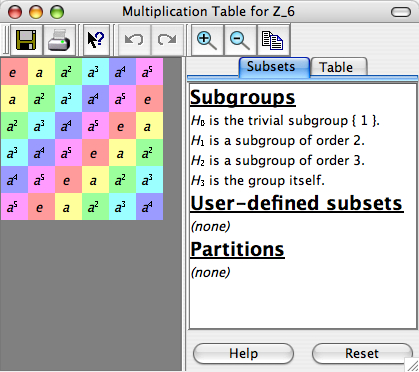
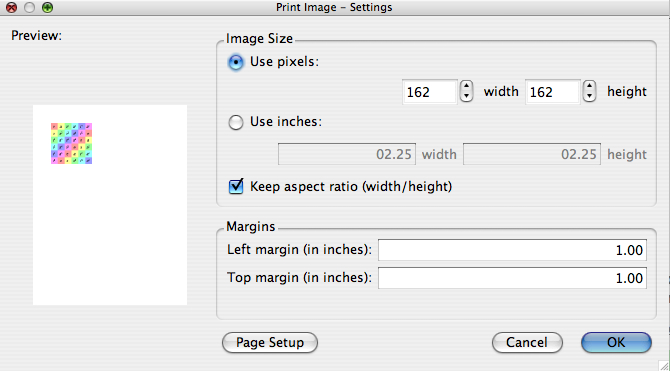
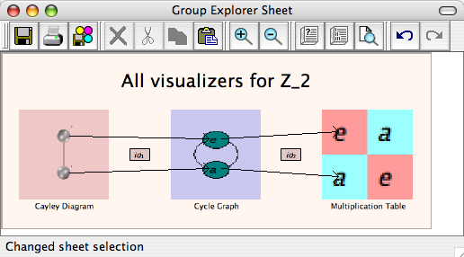
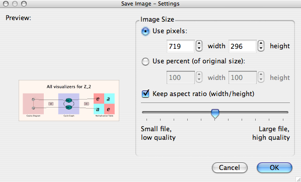

Saving and printing images from Group Explorer is easy. Usually you will want to do this from either a large visualizer or a sheet. Let's do a quick walk-through of saving an image, and of printing an image. For more information, refer to the help for large visualizers or for sheets.
Let's say you're viewing a multiplication table, as shown to the right, and want to print a copy of it. Note that what will be printed is simply the table itself, not any of the window frame or controls nearby. Click the "Print" button on the toolbar, and a window like the one below will appear. |
 |
|  | On the left, we can see how the multiplication table would appear on the printed page. But maybe you want a big copy. So let's make it as big as we can. |
You can see that the margins are currently set to one inch all around, and unless you know for sure that your printer can handle smaller margins, this is usually a safe bet. On an 8.5"x11" sheet of paper, this leaves us 6.5" of width to deal with. So click on the "Use inches:" button and type 06.50 for width, and because the "Keep aspect ratio (width/height)" box is checked, the height will automatically resize to match. If you click "Page Setup," you will get a printer setup dialog box specific to your platform (Windows, Macintosh, etc.). There is no need to do this, but it would allow you to choose paper type, number of copies, etc. Clicking OK sends the print job. Tip: When printing multiplication tables on a black and white printer, it is sometimes useful to choose Grayscale coloring from the Table tab in the multiplication table large visualizer. Otherwise, the grayscaling offered by the printer might make colors hard to distinguish. |
|
|  | Let's say you want to print the sheet shown to the left. (You can get a copy of this sheet by opening the group info window for Z2 and clicking "Show me all the views connected together in a sheet." |
Note that what will be saved is a copy of the sheet, that is the area enclosed in the pinkish-peach background; none of the window frame or controls will be included. Furthermore, regardless of what magnification level you're using to view the sheet (zoomed very far in or very far out), the original (100%-size) view is the basis for what you will save. If you click the "Save as image" button in the toolbar, a window like the one shown below opens. |
|
Note that the preview of the image on the left side of the window is always the same size. It is simply to show you what you will be saving, now how big it will be. One of the nicest features of this dialog is your ability to choose exactly the pixel dimension you want your image to be. |
 |
You can use this feature to prepare images that are exactly the size you want for a web page, for example. All files are saved in the Portable Network Graphics (PNG) format, which works well with web browsers. Click OK to open a window allowing you to choose a filename for the file. |
|
Quick help links:
Contents | Getting Started | Tutorials | User Manual | Miscellaneous Reference
GE terminology | Help on help